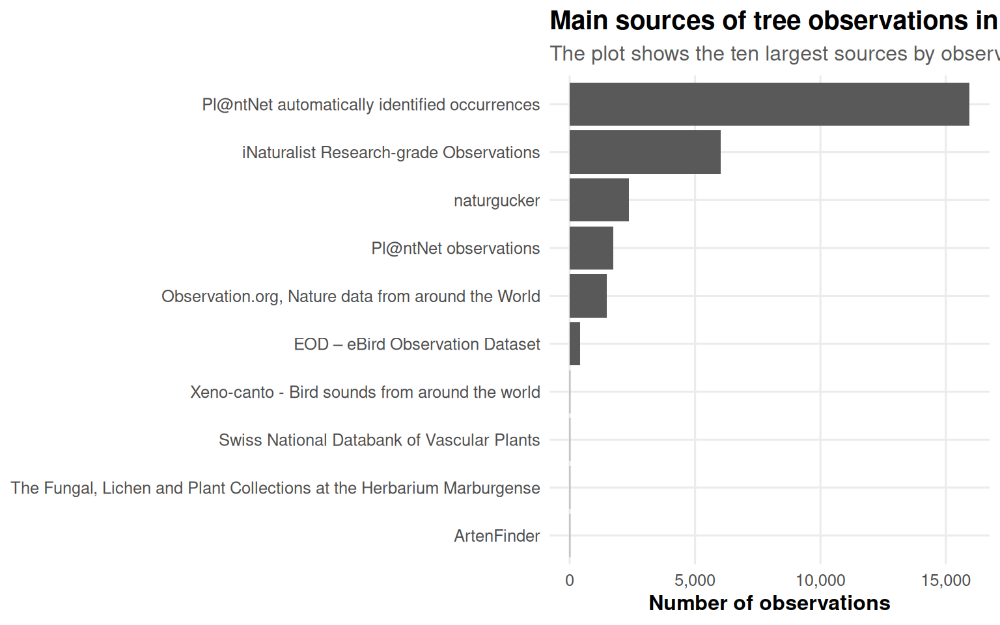
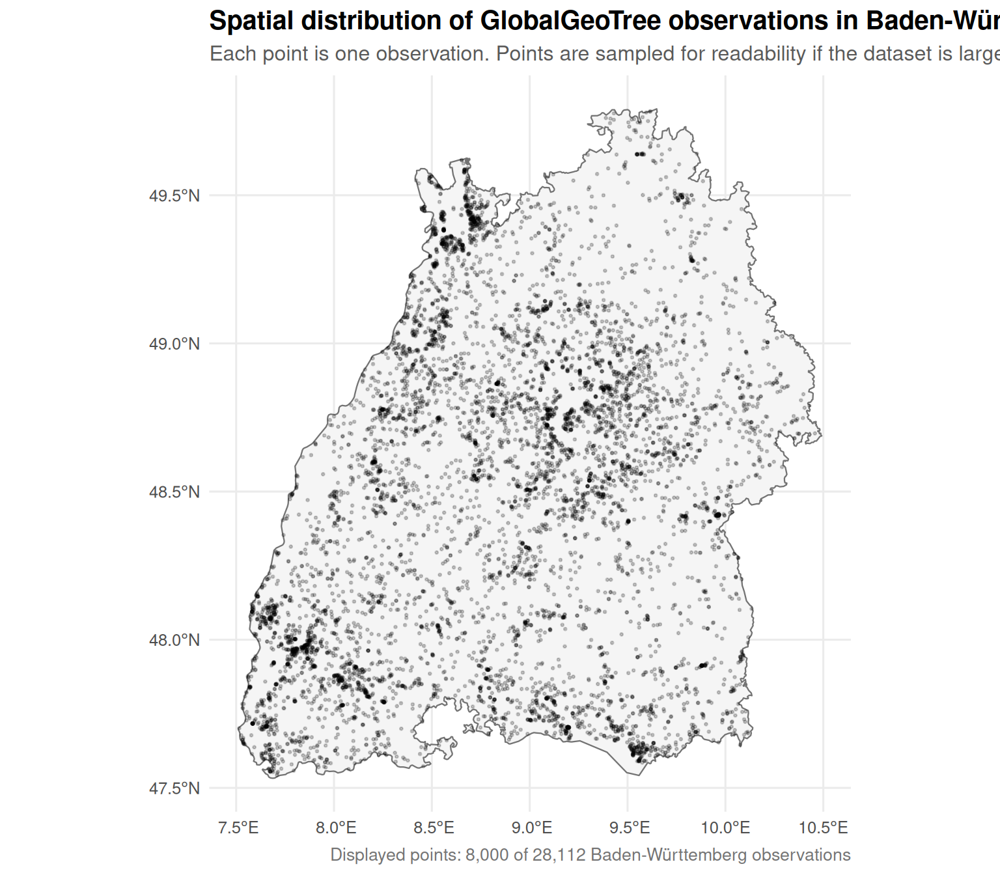
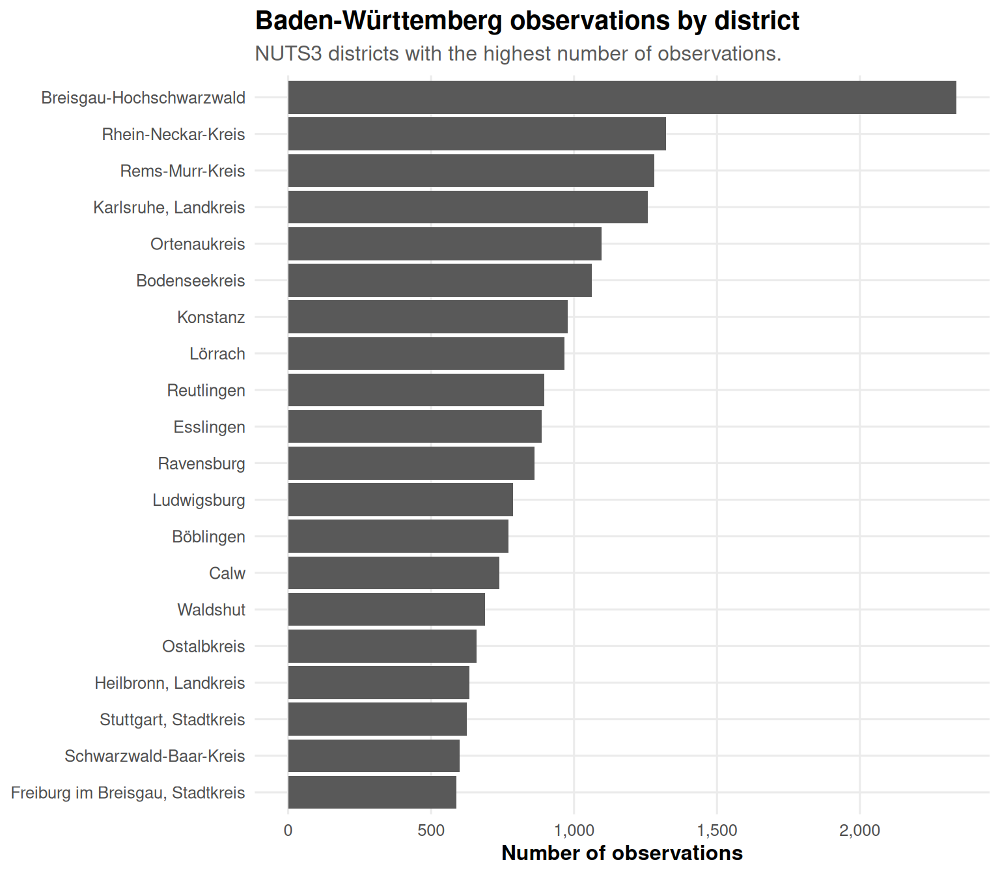
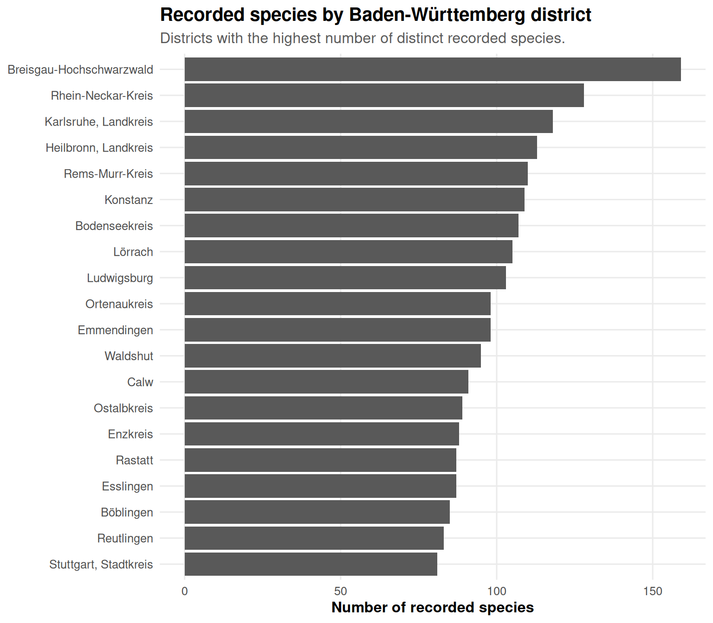
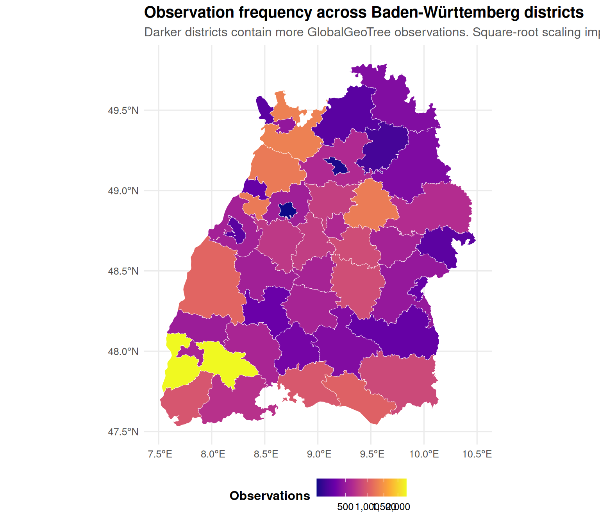
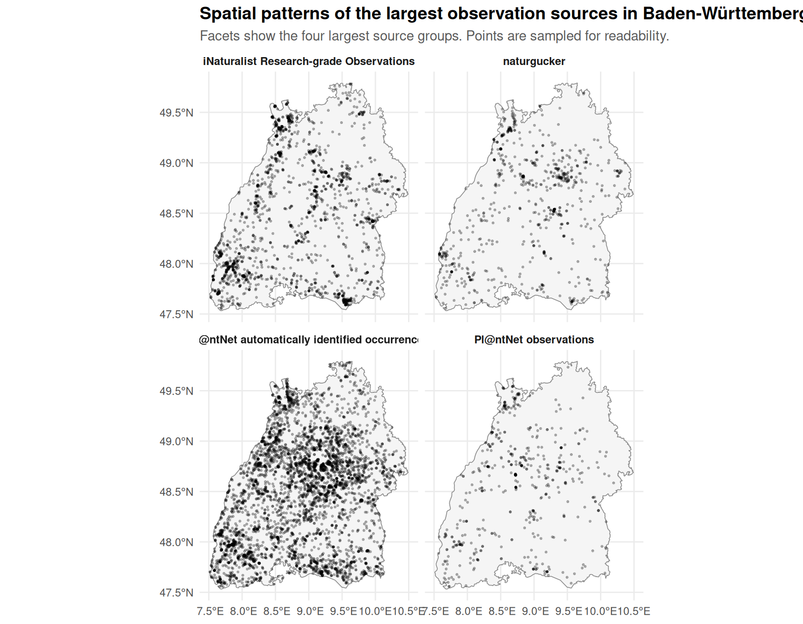
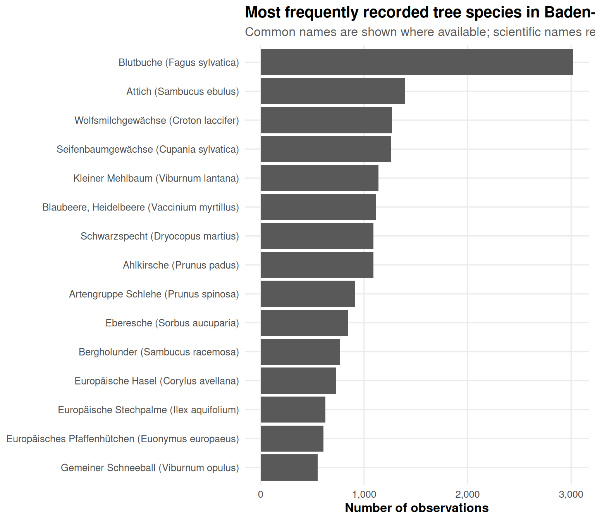
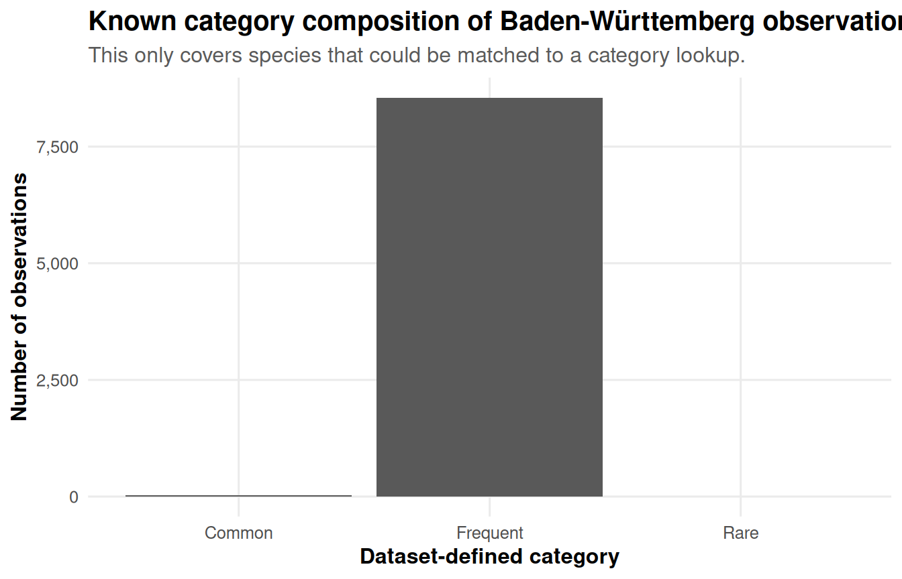

| item | value |
|---|---|
| Input file | GlobalGeoTree.csv |
| Rows in input file | 6,263,345 |
| Rows after coordinate/species cleaning | 6,263,345 |
| Countries after cleaning | 221 |
GlobalGeoTree Baden-Württemberg: Observations, Sources, Districts, and Common Names
1 Purpose
This report focuses on Baden-Württemberg. It answers four practical inspection questions:
- How many GlobalGeoTree observations are located in Baden-Württemberg?
- How many recorded species are located in Baden-Württemberg?
- Which data sources contribute Baden-Württemberg observations?
- How are tree observations distributed across Baden-Württemberg districts?
The report also includes an optional common-name enrichment step. Scientific names remain the primary identifier, but the script can try to add English and German common names using GBIF through the optional rgbif package. Results are cached in a local CSV file so the report does not need to query GBIF every time.
Important note: common names are not globally standardized. The report treats German and English names as GBIF vernacular names where available, not as guaranteed official names.
2 Setup
3 Load observations
4 Preview of the dataset
| sample_id | country_code | level0 | level1_family | level2_genus | level3_species | location | source | species_key | year | longitude | latitude |
|---|---|---|---|---|---|---|---|---|---|---|---|
| 1 | MW | Evergreen Broadleaf | Acanthaceae | Anisotes | Anisotes formosissimus | Malawi | iNaturalist Research-grade Observations | 5,576,177 | 2,024 | 34.770179 | -16.244345 |
| 2 | MZ | Evergreen Broadleaf | Acanthaceae | Anisotes | Anisotes formosissimus | Mozambique | iNaturalist Research-grade Observations | 5,576,177 | 2,018 | 34.342119 | -18.961792 |
| 3 | MZ | Evergreen Broadleaf | Acanthaceae | Anisotes | Anisotes sessiliflorus | Mozambique | iNaturalist Research-grade Observations | 7,264,409 | 2,022 | 34.339832 | -18.600213 |
| 4 | MZ | Evergreen Broadleaf | Acanthaceae | Anisotes | Anisotes sessiliflorus | Mozambique | iNaturalist Research-grade Observations | 7,264,409 | 2,015 | 34.340500 | -18.599860 |
| 5 | TZ | Evergreen Broadleaf | Acanthaceae | Avicennia | Avicennia marina | Tanzania, United Republic of | iNaturalist Research-grade Observations | 2,925,403 | 2,023 | 39.490521 | -6.148904 |
| 6 | KE | Evergreen Broadleaf | Acanthaceae | Avicennia | Avicennia spec | Kenya | naturgucker | 2,925,398 | 2,023 | 39.945604 | -3.285171 |
| 7 | NG | Evergreen Broadleaf | Acanthaceae | Avicennia | Avicennia spec | Nigeria | Biodiversity of Some Coastal Communities in Akwa-Ibom State, Nigeria | 2,925,398 | 2,021 | 8.031336 | 4.556238 |
| 8 | NG | Evergreen Broadleaf | Acanthaceae | Avicennia | Avicennia spec | Nigeria | Biodiversity of Some Coastal Communities in Akwa-Ibom State, Nigeria | 2,925,398 | 2,021 | 8.038207 | 4.557545 |
| 9 | NG | Evergreen Broadleaf | Acanthaceae | Avicennia | Avicennia spec | Nigeria | Flora of Coastal Environment in Cross-River State, Nigeria | 2,925,398 | 2,019 | 8.519425 | 4.779849 |
| 10 | NG | Evergreen Broadleaf | Acanthaceae | Avicennia | Avicennia spec | Nigeria | Flora of Coastal Environment in Cross-River State, Nigeria | 2,925,398 | 2,019 | 8.450121 | 4.787425 |
5 Load Baden-Württemberg boundaries
| item | value |
|---|---|
| NUTS1 boundary status | Loaded NUTS1 from data/external/germany_nuts1_2021.geojson |
| NUTS3 boundary status | Downloaded NUTS3 from GISCO. |
| Baden-Württemberg boundary available | Yes |
| Baden-Württemberg district polygons | 44 |
6 Filter observations to Baden-Württemberg
If NUTS boundaries are available, the report identifies Baden-Württemberg observations by spatially joining German observations to the Baden-Württemberg polygon. If boundaries are not available, it falls back to an approximate Baden-Württemberg bounding box.
| item | value |
|---|---|
| Filter method | Baden-Württemberg observations were identified using the official NUTS1 Baden-Württemberg boundary. |
| Baden-Württemberg observations | 28,112 |
| Baden-Württemberg recorded species | 287 |
| Baden-Württemberg recorded genera | 129 |
| Baden-Württemberg recorded families | 58 |
| Years represented | 2015–2024 |
7 Optional: add Rare/Common/Frequent categories
The full GlobalGeoTree file may not contain category. If not, this report tries to add category labels from the larger evaluation file. This only labels species present in the evaluation lookup, so category coverage may be incomplete.
| item | value |
|---|---|
| Category method | Category was joined from GlobalGeoTree-10kEval-900.csv by species_key where possible, then by scientific species name. |
| Baden-Württemberg observations with known category | 8,576 |
| Baden-Württemberg species with known category | 90 |
8 Optional: add English and German common names
This section first checks for a local cache file species_common_names_gbif.csv. If common names for some Baden-Württemberg species are missing and rgbif is installed, the report tries to retrieve English and German vernacular names from GBIF and updates the cache.
If this section is too slow, set enable_gbif_lookup <- FALSE in the setup chunk. The report will still render using scientific names.
| item | value |
|---|---|
| Common-name method | Common names were updated using GBIF and cached in species_common_names_gbif.csv |
| Baden-Württemberg species total | 287 |
| Baden-Württemberg species with English common name | 279 |
| Baden-Württemberg species with German common name | 269 |
9 Baden-Württemberg observations and species
| metric | value |
|---|---|
| Observations | 28,112 |
| Recorded species | 287 |
| Recorded genera | 129 |
| Recorded families | 58 |
| Data sources | 21 |
10 Sources of Baden-Württemberg observations
| source | observations | share |
|---|---|---|
| Pl@ntNet automatically identified occurrences | 15,947 | 56.7% |
| iNaturalist Research-grade Observations | 6,020 | 21.4% |
| naturgucker | 2,370 | 8.4% |
| Pl@ntNet observations | 1,750 | 6.2% |
| Observation.org, Nature data from around the World | 1,474 | 5.2% |
| EOD – eBird Observation Dataset | 428 | 1.5% |
| Swiss National Databank of Vascular Plants | 30 | 0.1% |
| Xeno-canto - Bird sounds from around the world | 30 | 0.1% |
| The Fungal, Lichen and Plant Collections at the Herbarium Marburgense | 16 | 0.1% |
| ArtenFinder | 13 | 0.0% |
| Occurrence Data of Vascular Plants collected or compiled for the Flora of Bavaria | 11 | 0.0% |
| Fungus Collections at Staatliches Museum für Naturkunde Karlsruhe (Herbarium KR) | 10 | 0.0% |
| 50c9509d-22c7-4a22-a47d-8c48425ef4a7 | 2 | 0.0% |
| Anymals+plants - Citizen Science Data | 2 | 0.0% |
| Birda - Global Observation Dataset | 2 | 0.0% |

11 Baden-Württemberg observation map

12 Baden-Württemberg districts: observations and species
The district analysis uses NUTS3 regions in Baden-Württemberg. In Germany these correspond approximately to Kreise and kreisfreie Städte.
| district_id | district_name | observations | species | sources |
|---|---|---|---|---|
| DE132 | Breisgau-Hochschwarzwald | 2,337 | 159 | 8 |
| DE128 | Rhein-Neckar-Kreis | 1,322 | 128 | 10 |
| DE116 | Rems-Murr-Kreis | 1,281 | 110 | 6 |
| DE123 | Karlsruhe, Landkreis | 1,258 | 118 | 9 |
| DE134 | Ortenaukreis | 1,097 | 98 | 10 |
| DE147 | Bodenseekreis | 1,063 | 107 | 9 |
| DE138 | Konstanz | 979 | 109 | 7 |
| DE139 | Lörrach | 966 | 105 | 9 |
| DE141 | Reutlingen | 896 | 83 | 7 |
| DE113 | Esslingen | 886 | 87 | 6 |
| DE148 | Ravensburg | 862 | 80 | 8 |
| DE115 | Ludwigsburg | 787 | 103 | 7 |
| DE112 | Böblingen | 771 | 85 | 7 |
| DE12A | Calw | 739 | 91 | 6 |
| DE13A | Waldshut | 688 | 95 | 7 |



13 Sources on the Baden-Württemberg map

14 Top recorded species with common names
| display_name | scientific_name | german_common_name | english_common_name | observations | share |
|---|---|---|---|---|---|
| Blutbuche (Fagus sylvatica) | Fagus sylvatica | Blutbuche | Beech | 3,020 | 10.7% |
| Attich (Sambucus ebulus) | Sambucus ebulus | Attich | Danewort | 1,397 | 5.0% |
| Wolfsmilchgewächse (Croton laccifer) | Croton laccifer | Wolfsmilchgewächse | Euphorbia family | 1,269 | 4.5% |
| Seifenbaumgewächse (Cupania sylvatica) | Cupania sylvatica | Seifenbaumgewächse | Litchi family | 1,263 | 4.5% |
| Kleiner Mehlbaum (Viburnum lantana) | Viburnum lantana | Kleiner Mehlbaum | Mealytree | 1,138 | 4.0% |
| Blaubeere, Heidelbeere (Vaccinium myrtillus) | Vaccinium myrtillus | Blaubeere, Heidelbeere | Bilberry | 1,113 | 4.0% |
| Schwarzspecht (Dryocopus martius) | Dryocopus martius | Schwarzspecht | Black Woodpecker | 1,090 | 3.9% |
| Ahlkirsche (Prunus padus) | Prunus padus | Ahlkirsche | Bird Cherry | 1,089 | 3.9% |
| Artengruppe Schlehe (Prunus spinosa) | Prunus spinosa | Artengruppe Schlehe | Blackthorn | 915 | 3.3% |
| Eberesche (Sorbus aucuparia) | Sorbus aucuparia | Eberesche | European Mountain-ash | 843 | 3.0% |
| Bergholunder (Sambucus racemosa) | Sambucus racemosa | Bergholunder | American red elderberry | 765 | 2.7% |
| Europäische Hasel (Corylus avellana) | Corylus avellana | Europäische Hasel | Barcelona-nuts | 730 | 2.6% |
| Europäische Stechpalme (Ilex aquifolium) | Ilex aquifolium | Europäische Stechpalme | English holly | 625 | 2.2% |
| Europäisches Pfaffenhütchen (Euonymus europaeus) | Euonymus europaeus | Europäisches Pfaffenhütchen | Common Spindle | 608 | 2.2% |
| Gemeiner Schneeball (Viburnum opulus) | Viburnum opulus | Gemeiner Schneeball | Crampbark | 553 | 2.0% |
| Blutroter Hartriegel (Cornus sanguinea) | Cornus sanguinea | Blutroter Hartriegel | Bloodtwig dogwood | 495 | 1.8% |
| Araliengewächse (Schefflera macrophylla) | Schefflera macrophylla | Araliengewächse | Aralia and Ivy family | 443 | 1.6% |
| Artengruppe Wiesen-Salbei (Salvia pratensis) | Salvia pratensis | Artengruppe Wiesen-Salbei | Introduced sage | 432 | 1.5% |
| Gemeiner Liguster (Ligustrum vulgare) | Ligustrum vulgare | Gemeiner Liguster | Common Privet | 395 | 1.4% |
| Einjähriges Berufkraut (Erigeron annuus) | Erigeron annuus | Einjähriges Berufkraut | Annual Fleabane | 382 | 1.4% |

15 Category composition, if available
| category | observations | species | observation_share |
|---|---|---|---|
| Frequent | 8,551 | 83 | 99.7% |
| Common | 24 | 6 | 0.3% |
| Rare | 1 | 1 | 0.0% |

16 Interpretation notes
The Baden-Württemberg subset gives a regional view of GlobalGeoTree observations. The observation map and district-level charts describe where data are concentrated, but they should not be interpreted directly as true tree abundance. High counts may reflect a combination of tree presence, citizen-science activity, institutional data availability, and source-specific sampling behavior.
The common-name enrichment is useful for making the report more readable. However, common names are incomplete and not standardized across all languages or regions. For reproducibility, all analysis should continue to use scientific names or species keys as the stable identifiers.